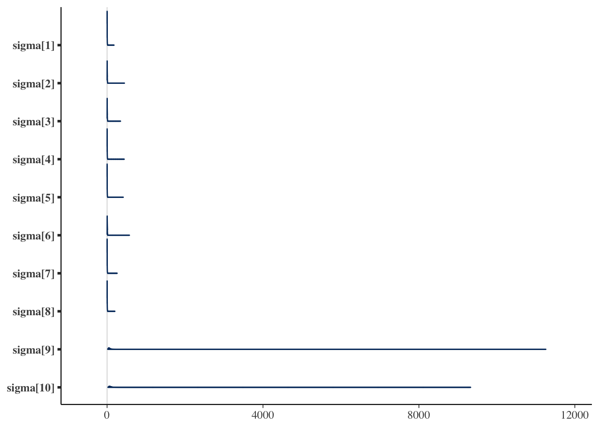
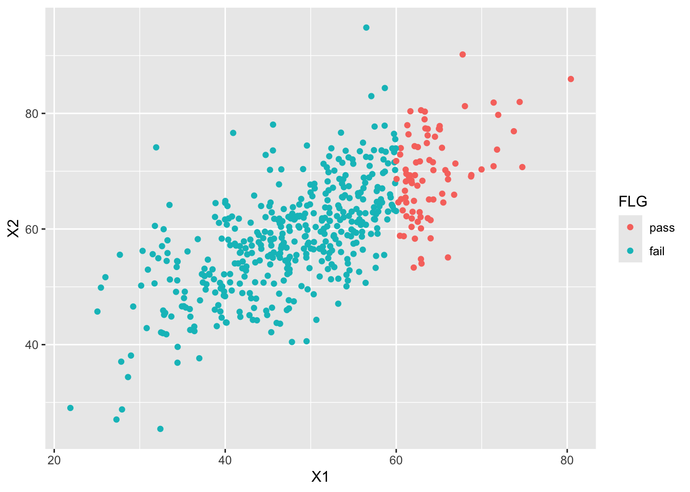
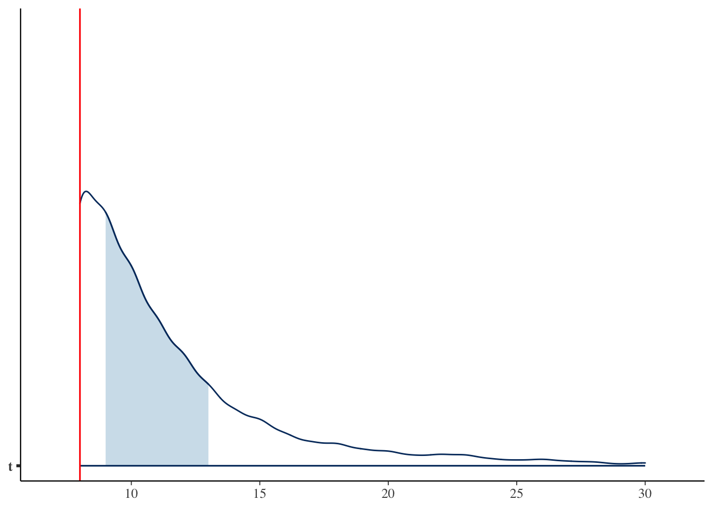
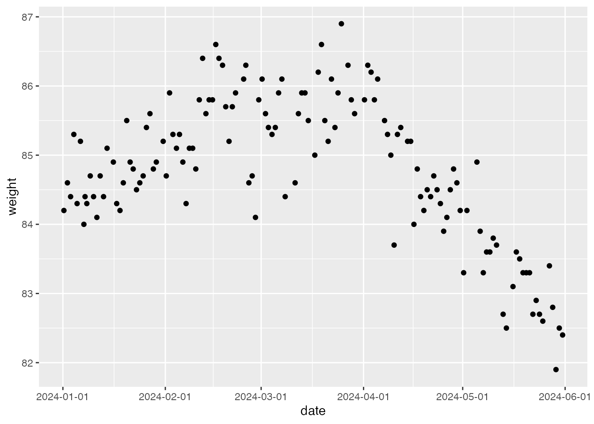
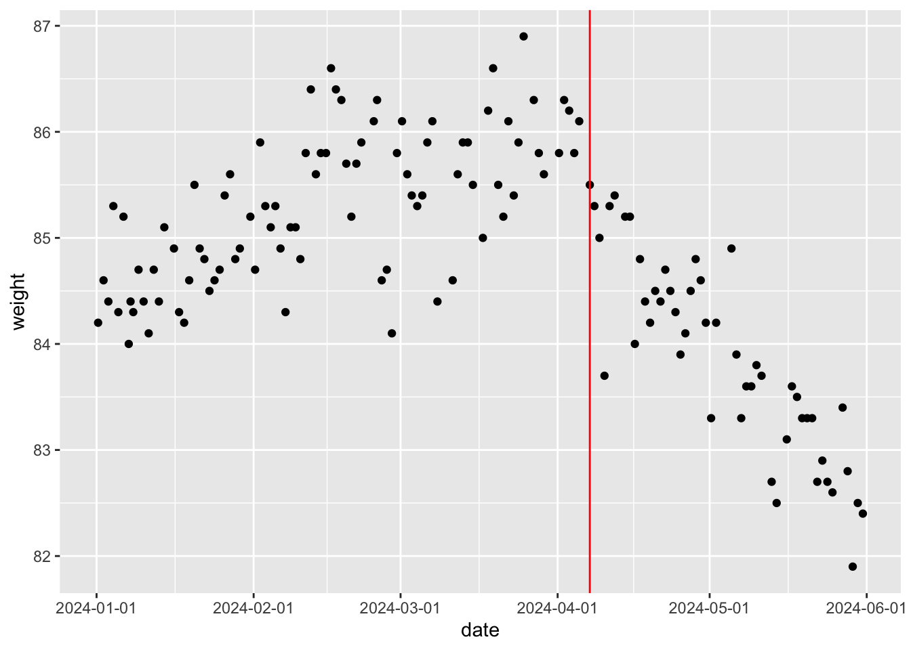
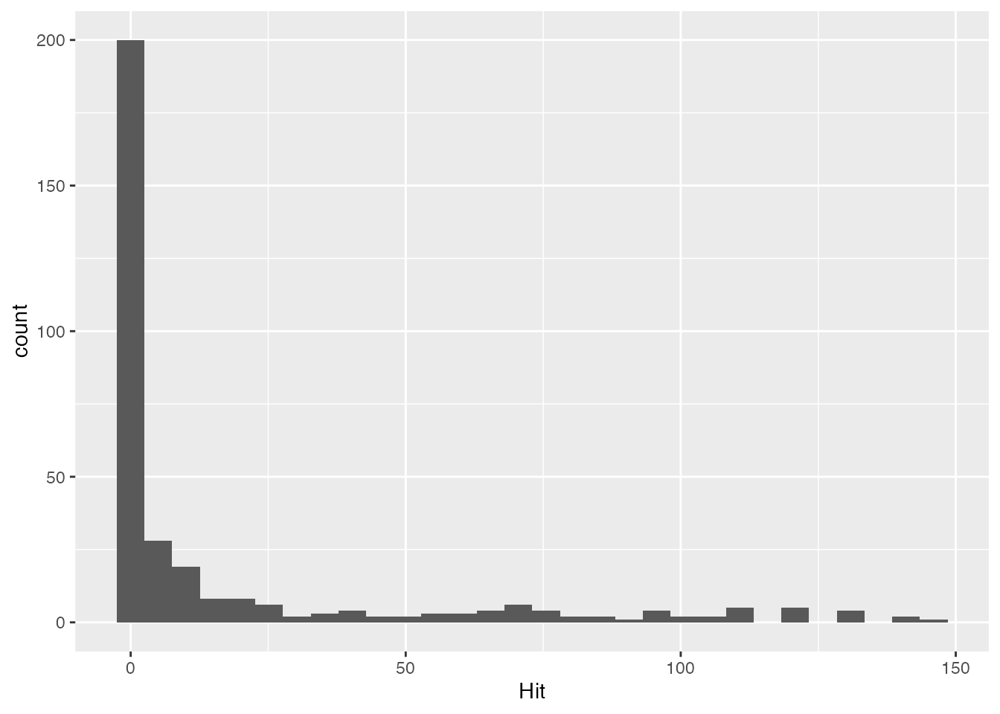
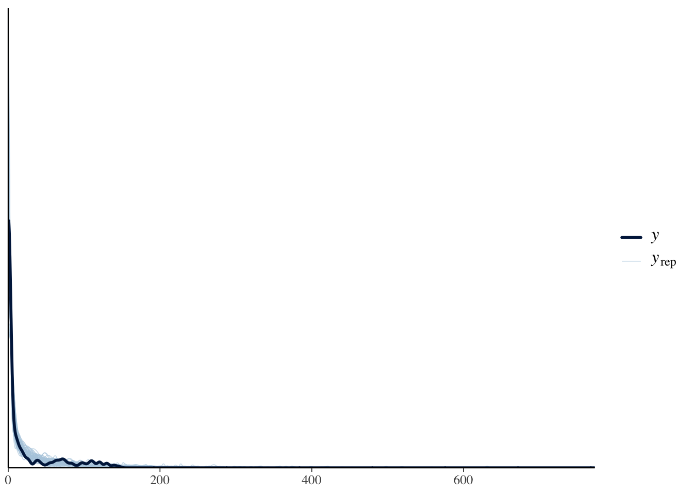

y <- c(151, 149, 152, 150, 151, 148, 151, 150, 221, 245)17 Bayesian Modelling
So far we have introduced “off-the-shelf” statistical models — models with fixed forms, fixed parameter sets, and standard interpretations, applicable whenever the data fit the right shape. Bayesian modelling is different: it builds the model to fit the data, and then uses Bayesian methods to estimate it. Strictly speaking the estimation method need not be Bayesian — MLE or least squares would work — but those approaches require the analyst to develop the estimation procedure as well. With probabilistic programming languages and Bayesian estimation, by contrast, the analyst writes down the probabilistic model and lets the language deliver the estimates. The researcher then focuses on designing a model that fits their data and their background, without working out the technical estimation procedure. Probabilistic programming languages require programming knowledge, but once you have that knowledge, original analyses become a matter of imagination.
The remainder of this chapter covers programming in Stan and a few characteristic examples. Before that, a few guidelines on how to learn Bayesian modelling.
17.1 How to learn Bayesian modelling
17.1.1 Step 1: learn the probabilistic programming language (Stan)
You have already met R, so we need not lecture on “what programming is.” The probabilistic programming language we use here — Stan — is rather more advanced than R, being built on C++. Two differences will jump out at the beginner: interpreted vs. compiled languages, and type declarations.
17.1.1.1 Interpreted vs. compiled
R is an interpreted language. In personal shorthand, “question-and-answer style.” When R shows the > prompt, it is waiting for input; you type a calculation or instruction, and R immediately returns the result. The cycle of question and answer repeats.
A compiled language is different. C, Java, Python, and Stan all work this way. You write the entire program first, and then the source file is translated into machine code — compiled. Running the compiled artefact executes the program. If there is an error in the source: either (1) the source fails to compile, or (2) it compiles but errors at run time. Errors typically come with a line number. An interpreted language flags the offending line immediately, which is convenient for catching errors; a compiled language only finds them after you finish writing,1 which can feel inconvenient.
The advantage of compilation is speed: the source is translated into the machine’s native language, and the machine then operates in that language. To make this possible, the language requires a dedicated compilation toolchain, and the resulting artefact runs only in environments that the toolchain supports. On Windows you need Rtools; on macOS, the command-line developer tools. These tap into lower layers of the system, more akin to building an MCMC application than to running an ordinary application, and antivirus software occasionally interferes. We assume the environment is set up; setting it up may take some effort. If you get stuck, Web search or asking an AI assistant should help.
In a Stan analysis you write the program in a Stan file separate from the R file. The R side instructs Stan to compile this file, and then to use the compiled object to sample by MCMC. The results are returned as an R object, after which downstream work is plain R. RStudio’s editor handles both file types; just don’t mix the two languages within a single file.
17.1.1.2 Type declarations
A possibly unfamiliar concept: declaring a variable’s type before using it. int x;, for example, declares x to be an integer. Integers cannot accept 1.0 (a real) or 1 + 0i (a complex number); only 1.
Compiled languages require type declarations. They prevent the silent error of assigning a real to a variable that was supposed to be an integer. R lets you assign x <- 1 without ceremony, and x is treated as whatever type the value carries. Coming from R, mandatory type declarations may feel cumbersome — but they make the language considerably more robust.
Stan needs type declarations in each block. A block is a region delimited by braces {}. Stan has six:
- data block
- transformed data block
- parameters block
- transformed parameters block
- model block
- generated quantities block
The most frequently used are 1, 3, and 5. The data block declares everything Stan receives from outside; a type mismatch raises an error (e.g., a Stan-side int x; but an R-side x <- 1.2 will fail).
The parameters block declares the quantities to be estimated; Stan returns posterior samples for these. The model block describes the probability model (the likelihood) and is the heart of the file.
The remaining blocks are supplementary and not always needed. The transformed data block modifies data declared in the data block; the transformed parameters block transforms parameters declared in the parameters block. Such transformations make subsequent computation more readable. For example, in regression the parameters are the intercept \(\beta_0\) and the slope \(\beta_1\), combined with the predictor \(x_i\) to form the fitted value \(\hat{y}_i\). With \(\beta_0\) and \(\beta_1\) declared as parameters and yhat declared in transformed parameters as
\[ yhat = \beta_0 + \beta_1 x, \]
the model block uses yhat directly. When a derived parameter is a combination of others, writing it as a transformed parameter often improves clarity.
The generated quantities block processes the sampled values. The same processing can be done on the R side after sampling, so this block is optional — but if you need certain transformed quantities, computing them inside (compiled, fast) Stan can be convenient. We will see uses below.
17.1.1.3 Other small differences
Lines end with semicolons; comments are //-style; that sort of thing.
The first rule of programming is that the code does what you wrote, not what you intended. Any unexpected error is in the code you wrote.2 Take errors as hints toward the solution rather than something to fear. Address each problem one at a time and you will get there. AI assistants are remarkably useful here too — paste the entire error message and ask where the problem is.
17.1.2 Step 2: rewrite analyses you already know
We have covered many statistical models. Step 2 of Bayesian-modelling learning is to rewrite those analyses in Stan.
What does a regression, a multiple regression, an HLM look like in Stan? brms would spare you that effort, but writing the model yourself reveals exactly how each model is expressed.
The key shift in perspective is to view analysis as describing a data-generating mechanism. We often start with data and search for a method to fit, or — if our analytic methods are limited — collect data that fit the methods we have. This is backwards. If your statistical package only does regression, “give up on the discrete variable and redesign the study” is an impoverished move.
The goal of statistics is to turn natural human behaviour and responses into numbers and read meaning out of them; budget or environment should not be allowed to bend the behaviour itself. Keep the data as raw as possible, and think about how to analyse them. Approach the question from “what mechanism generated this data?” The “mechanism” can equally be called a probability distribution. A single response cannot be deterministic; the possible alternative values, together, form a probability distribution. The parameters of that distribution are then specified by a mathematical structure.
In regression, each observation \(y_i\) is the true value \(\hat{y}_i\) plus error \(e_i\). The error is normal, so \(y_i \sim N(\hat{y}_i, \sigma^2)\). The mean \(\hat{y}_i\) is the linear combination of predictors \(x_i\): \(y_i \sim N(\beta_0 + \beta_1 x_i, \sigma^2)\). And so on.
The \(t\)-test and ANOVA can be described the same way. Rewriting them clarifies aspects of the model you had not noticed: which distribution does the model assume? What constraints sit on the parameters? What priors are in play? Writing it all explicitly in Stan brings these to light. That is the educational value of rewriting.
17.1.3 Step 3: try various models
Once you can express familiar models in a probabilistic programming language, look at what only a probabilistic programming language can express.
The \(t\)-test and ANOVA are tests of mean differences. From a data-generation perspective they cover only a tiny slice of the space: data from a normal distribution, with mean differences across groups.
Can we model parameters other than the mean? Can we ask about a particular pair of groups? Can we ask not just whether there is a difference but how large it is, or what the probability is that one group’s mean exceeds the other’s?
Bayesian modelling answers all of these. Even data from a factorial design can be examined with new angles and new hypotheses.
Bayesian modelling is not limited to factor-effect identification under designed experiments. For data that are not normal, or that do not partition into discrete groups, you can build models from the data-generating-mechanism perspective. The examples below should convey how the analytic viewpoint changes. Statistical analysis is not the constrained application of pre-existing analyses to handed-over data; it is the creative work of imagining the data-generating mechanism.
17.1.4 Step 4: know the limitations
Once the freedom and creativity of Bayesian modelling sink in, you may hit its limits. Enjoy the modelling first, but here is a preview.
The first issue is model evaluation. NHST gives a clear criterion: “if \(p\) is below the chosen \(\alpha\), declare a difference.” Bayesian modelling does not yield a clean “yes or no” of that kind. How do we compare a null-hypothesis model against an alternative, or our novel model against an existing one?
The standard answer is the Bayes factor (BF). Bayesian model assessment is essentially unified under BF. The BF expresses the relative fit of two models to the same data and so admits “the null is better than the alternative” as a valid conclusion. The “fit” (marginal log-likelihood) is, however, computationally awkward and sometimes not analytically tractable, requiring estimation.3 Computational advances are awaited.
For routine models (e.g., \(t\)-tests, ANOVA), packages and applications compute BFs automatically. JASP (JASP Team 2025) is a well-known GUI tool that supplies Bayesian results alongside classical ones, with BFs computed automatically.
A common threshold is “BF > 3.0 means one model is superior,” but the binary mindset has, historically, encouraged over-interpretation and threshold-chasing — so use thresholds with care. The BF is also known to depend strongly on the prior, even within the same model; the proper choice of “objective” prior remains debated.
When the BF is not the right tool, evaluation falls back on inspecting the posterior. Kruschke (2018) proposes declaring a region of practical equivalence in advance; 豊田 (2020) proposes evaluating via functional features of the posterior. Both are offered as alternatives to NHST. The wider debate is unresolved.
Assuming model evaluation is handled, the next stumbling block is “I cannot design my own model.” The models below are appealing, but designing them is intimidating. There is no shortcut, but “build the entire model from scratch” is an unnecessarily large ambition. Familiarise yourself with many models first, and imagine how each might fit your data. Or start with a tiny toy model and grow it incrementally — 浜田 (2018) and 浜田 (2020) make this point well.
Often a plain linear model is sufficient. After all this talk of customisation, that may sound contradictory, but if the trend is clear, a linear model will mostly do. Linear models are not perfect but are widely understandable; modelling refines the fine details, and finer detail is often unnecessary in practice. “Linear” need not mean “simple regression”: GLMs, mixed models, and various other extensions cover much ground.
Even with these limitations in mind, Bayesian modelling is well worth learning. To dismiss statistics without ever experiencing this free and creative world is a waste. The examples that follow will give a taste of what is possible.
17.2 Models based on the normal distribution
We start with the well-trodden normal-distribution models.
17.2.1 Estimating variances
Normal-distribution models in psychology almost always concern means via general linear models. The normal is parameterised by a location \(\mu\) and a scale \(\sigma\);4 the scale captures spread or measurement error. Let us model that.
A cover story:5 a gyudon (beef bowl) restaurant requires 150 g of meat per regular bowl. During a spot inspection, ten servers (two of them recent part-timers) each prepare a bowl. The measured meat weights:
Model: every server aims for \(\mu = 150\), but the per-individual error variance differs:
\[ y_i \sim N(\mu, \sigma_i). \]
The mean is shared (\(\mu\) has no subscript \(i\)); the spread varies (\(\sigma_i\) does).
The unknowns are \(\mu\) and the \(\sigma_i\), estimated by Stan via MCMC. Save the Stan source as, say, gyudon10.stan:
data{
int N;
array[N] real Y;
}
parameters{
real mu;
array[N] real<lower=0> sigma;
}
model{
// likelihood
for(i in 1:N){
Y[i] ~ normal(mu, sigma[i]);
}
// prior
mu ~ uniform(0, 200);
sigma ~ cauchy(0,5);
}Three blocks: data, parameters, model. Note the int, array, and real type declarations.
The data block first declares the sample size as an integer, so the same code works for 7, 50, or any other sample size. array[N] real Y; declares a length-N real array.
parameters declares the unknowns \(\mu\) (a single real) and \(\sigma_i\) (a real array of length N). The constraint <lower=0> restricts \(\sigma_i\) to non-negative values — variances cannot be negative, and the constraint helps the sampler explore appropriate regions.
model is the probabilistic model. Bayesian models require a likelihood and a prior. The line Y[i] ~ normal(mu, sigma[i]) inside a for loop is:
\[ \prod_{i=1}^{N} N(Y_i \mid \mu, \sigma_i). \]
Internally Stan works with the log-likelihood:
\[ \sum_{i=1}^{N} \log N(Y_i \mid \mu, \sigma_i). \]
Anyone who can write down a probabilistic model can therefore obtain estimates from Stan.
Here the priors are uniform on \([0, 200]\) for \(\mu\) and Cauchy for \(\sigma_i\). Any prior is acceptable; without specification Stan supplies a wide uniform automatically. Heavy-tailed priors — Cauchy, Student’s \(t\), exponential — are typical for scale parameters.
Run from R:
data…the datachains…number of MCMC chainsparallel_chains…how many to run in parallel (one less than the available CPU cores is a sensible default)iter_warmup…warm-up iterations (see Section 12.4.2)iter_sampling…sampling iterations (see Section 12.4.2)refresh…how often to print sampling progress (optional)
pacman::p_load(cmdstanr)
model <- cmdstan_model("gyudon10.stan")
dataSet <- list(
N = length(y),
Y = y
)
fit <- model$sample(
data = dataSet,
chains = 4,
parallel_chains = 4,
iter_warmup = 2000,
iter_sampling = 5000,
refresh = 0,
save_cmdstan_config = TRUE
)Running MCMC with 4 parallel chains...Chain 4 finished in 0.2 seconds.
Chain 1 finished in 0.3 seconds.
Chain 2 finished in 0.3 seconds.
Chain 3 finished in 0.3 seconds.
All 4 chains finished successfully.
Mean chain execution time: 0.3 seconds.
Total execution time: 0.4 seconds.print(fit) variable mean median sd mad q5 q95 rhat ess_bulk ess_tail
lp__ -18.69 -18.36 2.29 2.15 -22.93 -15.63 1.00 5244 10026
mu 150.55 150.72 0.67 0.57 149.36 151.42 1.00 4424 5381
sigma[1] 2.98 1.55 5.75 1.65 0.13 9.88 1.00 3362 2147
sigma[2] 4.60 2.84 8.18 2.14 0.73 13.30 1.00 7318 7300
sigma[3] 4.65 2.78 8.01 2.16 0.73 13.79 1.00 5579 4064
sigma[4] 3.50 1.80 9.21 1.66 0.23 10.34 1.00 6755 5847
sigma[5] 2.98 1.50 8.25 1.63 0.11 9.31 1.01 1411 580
sigma[6] 5.97 3.81 9.46 2.54 1.32 16.74 1.00 7548 4588
sigma[7] 3.05 1.55 6.17 1.66 0.14 10.24 1.00 3804 3159
sigma[8] 3.20 1.79 5.52 1.69 0.21 10.00 1.00 6166 4928
# showing 10 of 12 rows (change via 'max_rows' argument or 'cmdstanr_max_rows' option)The estimated \(\mu\) is near 150 — consistent with the manual. The per-individual errors are the point of interest; visualise them:
pacman::p_load(bayesplot)
draws <- fit$draws()
# visualise sigma only
bayesplot::mcmc_areas(draws, regex_pars = "sigma")
The last two values are conspicuously large — the two unexperienced part-timers.
For numerical summaries, bayestestR is handy:
pacman::p_load(bayestestR)
sigma_draws <- draws[, , grepl("sigma", dimnames(draws)$variable)]
# EAP, MAP, median, 95% HDI
bayestestR::describe_posterior(sigma_draws,
centrality = c("mean", "median", "MAP"),
ci = 0.95, ci_method = "hdi", test = NULL
)Summary of Posterior Distribution
Parameter | Median | Mean | MAP | 95% CI
-----------------------------------------------------
sigma[1] | 1.55 | 2.98 | 0.20 | [ 0.03, 9.88]
sigma[2] | 2.84 | 4.60 | 1.34 | [ 0.04, 13.30]
sigma[3] | 2.78 | 4.65 | 1.39 | [ 0.05, 13.79]
sigma[4] | 1.80 | 3.50 | 0.90 | [ 0.04, 10.36]
sigma[5] | 1.50 | 2.98 | 0.42 | [ 0.01, 9.31]
sigma[6] | 3.81 | 5.97 | 2.33 | [ 0.16, 16.78]
sigma[7] | 1.55 | 3.05 | 0.28 | [ 0.03, 10.24]
sigma[8] | 1.79 | 3.20 | 0.81 | [ 0.03, 10.01]
sigma[9] | 60.12 | 89.72 | 47.44 | [18.73, 226.97]
sigma[10] | 80.58 | 118.00 | 57.32 | [24.52, 304.54]Because the posterior is a distribution, mean (EAP), median, and mode (MAP) give different summaries. Variance parameters in particular tend to have skewed posteriors, for which the EAP is not the best summary.
The interval here is HDI (Highest Density Interval) — the 95% region around the densest part of the posterior — rather than the percentile-based ETI (Equal-Tailed Interval). For skewed posteriors ETI can be misleading. See クルシュケ ([2014] 2017), Makowski et al. (2019), or the bayestestR site.
We have estimated a spread parameter from ten observations. Beyond mean parameters, modelling targets include any parameter of the distribution. In psychology, the per-individual error variance under repeated measurement reflects that individual’s precision; in the gyudon example it reads as expertise. With auxiliary data \(z_i\) (e.g., days of experience), one could model \(\sigma_i = \beta_0 + \beta_1 z_i\) and study how experience reduces error. The take-home is that psychology need not confine itself to means — we are free to model many other quantities.
17.2.2 Making use of missing data
Next, modelling a correlation.
It is sometimes noted that the correlation between university entrance scores and university-life grades is not as high as one might expect. This is not because entrance exams fail to measure ability; it is the selection effect. Only those with scores above a cut-off are admitted, so the observed data contain only part of the original “entrance score” information.
Simulate this. First make correlated data, then drop part of it:
pacman::p_load(MASS, tidyverse)
N <- 500
mu <- c(50, 60)
sd <- c(10, 10)
rho <- 0.7
Sig <- matrix(nrow = 2, ncol = 2)
Sig[1, 1] <- sd[1] * sd[1]
Sig[1, 2] <- sd[1] * sd[2] * rho
Sig[2, 1] <- sd[2] * sd[1] * rho
Sig[2, 2] <- sd[2] * sd[2]
# generate
set.seed(17)
X <- mvrnorm(N, mu, Sig, empirical = T)
dat <- data.frame(X)
dat$FLG <- factor(ifelse(dat$X1 > 60, 1, 2), labels = c("pass", "fail"))
# plot
g <- ggplot(dat, aes(x = X1, y = X2, group = FLG, color = FLG)) +
geom_point()
g
Suppose those who scored 60 or more “passed.” The correlation in the full data and in the truncated data:
# full data
cor(dat$X1, dat$X2)[1] 0.7# replace failed-group X2 with missing
dat[dat$FLG == "fail", ]$X2 <- NA
# correlation excluding missing
cor(dat$X1, dat$X2, use = "complete.obs")[1] 0.4284751If those who failed are missing on \(X_2\), the correlation drops to about 0.428.
A Bayesian model can correct for this:
data{
int<lower=0> Nobs;
int<lower=0> Nmiss;
array[Nobs] vector[2] obsX;
array[Nmiss] real missX;
}
parameters{
vector[2] mu;
real<lower=0> sd1;
real<lower=0> sd2;
real<lower=-1,upper=1> rho;
}
transformed parameters{
cov_matrix[2] Sig;
Sig[1,1] = sd1 * sd1;
Sig[1,2] = sd1 * sd2 * rho;
Sig[2,1] = Sig[1,2];
Sig[2,2] = sd2 * sd2;
}
model{
//likelihood
obsX ~ multi_normal(mu, Sig);
missX ~ normal(mu[1], sd1);
//prior
mu[1] ~ uniform(0,100);
mu[2] ~ uniform(0,100);
sd1 ~ cauchy(0,5);
sd2 ~ cauchy(0,5);
rho ~ uniform(-1,1);
}In the data block, Nobs and Nmiss are integer counts: the number of cases observed on both variables, and the number missing on one. Stan does not represent NA directly, so only the valid data are passed; the counts make sure both groups are handled.
vector[2] obsX[Nobs] declares an array of length Nobs of 2-vectors — pairs of observed values. The data with one variable missing are passed as Nmiss real values (not vectors).
The target is the correlation rho, which appears in the variance–covariance matrix of a bivariate normal. The likelihood is
\[ obsX \sim MN(\mathbb{\mu}, \mathbb{\Sigma}), \]
with
\[ \mathbb{\Sigma} = \begin{pmatrix} \sigma_1^2 & \sigma_{12}\\ \sigma_{21} & \sigma_2^2 \end{pmatrix} = \begin{pmatrix} \sigma_1^2 & \sigma_1 \sigma_2 \rho \\ \sigma_1 \sigma_2 \rho & \sigma_2^2 \end{pmatrix}, \]
where \(\sigma_1, \sigma_2\) are the per-variable SDs and \(\rho\) the correlation.
The parameters block declares \(\sigma_1\), \(\sigma_2\), \(\rho\), and the transformed parameters block rebuilds the covariance matrix from them. Stan has a dedicated cov_matrix type for this.
Now look at the model block carefully. For complete pairs obsX we use the multivariate normal. For the half-missing missX we still have the \(X_1\) values, which under the model are univariate normal with mean \(\mu_1\) and SD \(\sigma_1\); we add that likelihood to leverage the remaining information.
The priors: a uniform(0, 100) on each mean (a test score), Cauchy on the SDs, and Stan’s lkj_corr (with shape 1) on the correlation — a non-informative prior for correlations.
Compile, fit, and inspect rho. Mind how the data are passed:
model <- cmdstan_model("missing_corr.stan")
dataSet <- list(
Nobs = sum(!is.na(dat$X2)),
Nmiss = NROW(dat$X1) - sum(!is.na(dat$X2)),
obsX = dat[!is.na(dat$X2), c(1, 2)],
missX = dat[is.na(dat$X2), 1]
)
fit <- model$sample(
data = dataSet,
chains = 4,
parallel_chains = 4,
refresh = 0,
save_cmdstan_config = TRUE
)Running MCMC with 4 parallel chains...Chain 2 finished in 0.8 seconds.
Chain 4 finished in 0.8 seconds.
Chain 1 finished in 0.8 seconds.
Chain 3 finished in 0.8 seconds.
All 4 chains finished successfully.
Mean chain execution time: 0.8 seconds.
Total execution time: 0.9 seconds.bayestestR::describe_posterior(fit$draws("rho"),
centrality = c("mean", "median", "MAP"), ci = 0.95, ci_method = "hdi", test = NULL
)Summary of Posterior Distribution
Parameter | Median | Mean | MAP | 95% CI
-----------------------------------------------
rho | 0.73 | 0.71 | 0.76 | [0.50, 0.88]The recovered correlation is 0.711 — essentially the true value. Because each margin of a bivariate normal is itself a (univariate) normal, adding the \(X_1\) information to the likelihood lets us use all the data we have. Even when observed data are limited, modelling the generating mechanism can recover the missing information. Truncated or censored data — say, scores capped at an upper or lower bound — can be similarly modelled to estimate what the “uncensored” value would have been.6
17.3 Models with non-normal distributions
Bayesian modelling sets a mathematical structure on the parameters of a probability distribution. Here are some non-normal examples.
17.3.1 Item response theory
As we saw in Section 15.3, IRT is exactly a non-normal model in this sense: the response variable is binary, the distribution is Bernoulli, and the success probability is given a logistic structure on a latent ability \(\theta\).
In symbols, the response of person \(i\) to item \(j\) is
\[ Y_{ij} \sim \text{Bernoulli}(p_i), \] \[ p_i = \frac{1}{1 + \exp\bigl(-a_j (\theta_i - b_j)\bigr)}. \]
In Stan:
data{
int<lower=0> L; // data length
int<lower=0> N; // number of persons
int<lower=0> M; // number of questions
array[L] int<lower=0> Pid; // personal ID
array[L] int<lower=0> Qid; // question ID
array[L] int<lower=0,upper=1> resp; // response
}
parameters{
array[M] real<lower=0> a;
array[M] real<lower=-5,upper=5> b;
array[N] real theta;
}
model{
//likelihood
for(l in 1:L){
resp[l] ~ bernoulli_logit(1.7*a[Qid[l]]*(theta[Pid[l]]-b[Qid[l]]));
}
//prior
a ~ lognormal(0,sqrt(0.5));
b ~ normal(0,3);
theta ~ normal(0,1);
}We assume long-format tidy data: one row per response, with columns for person ID, item ID, and the binary outcome.
The data block receives the total number of rows L, the number of persons N, the number of items M, and length-L vectors of person IDs (Pid), item IDs (Qid), and responses (resp). Note the allowed ranges.
parameters declares item parameters a_j and b_j of length M and the person parameters theta of length N.
The model block uses bernoulli_logit, a fused Bernoulli + logistic that Stan provides for convenience. The double indexing theta[Pid[l]] — Pid[l] returns an integer that picks out the corresponding \(\theta\). The priors are log-normal on a_j, normal on b_j, and standard normal on theta_i.
Fit on exametrika’s J15S500, reshaped to long format:
pacman::p_load(exametrika, tidyverse)
dat <- J15S500$U
dat_long <- dat %>%
as.data.frame() %>%
rowid_to_column("ID") %>%
pivot_longer(-ID)
model <- cmdstan_model("irt2pl.stan")
dataSet <- list(
L = NROW(dat_long),
M = 15,
N = 500,
Pid = dat_long$ID,
Qid = as.numeric(as.factor(dat_long$name)),
resp = dat_long$value
)
fit <- model$sample(
data = dataSet,
chains = 4,
parallel_chains = 4,
refresh = 0,
save_cmdstan_config = TRUE
)Running MCMC with 4 parallel chains...
Chain 4 finished in 46.0 seconds.
Chain 2 finished in 55.0 seconds.
Chain 1 finished in 60.6 seconds.
Chain 3 finished in 64.1 seconds.
All 4 chains finished successfully.
Mean chain execution time: 56.4 seconds.
Total execution time: 64.3 seconds.fit$draws(c("a", "b")) %>%
describe_posterior(
centrality = c("mean", "median", "MAP"), ci = 0.95,
ci_method = "hdi", test = NULL
)Summary of Posterior Distribution
Parameter | Median | Mean | MAP | 95% CI
---------------------------------------------------
a[1] | 0.40 | 0.41 | 0.41 | [ 0.25, 0.58]
a[2] | 0.47 | 0.48 | 0.47 | [ 0.30, 0.66]
a[3] | 0.31 | 0.31 | 0.29 | [ 0.17, 0.46]
a[4] | 0.87 | 0.88 | 0.83 | [ 0.61, 1.18]
a[5] | 0.39 | 0.39 | 0.39 | [ 0.23, 0.55]
a[6] | 0.58 | 0.59 | 0.57 | [ 0.36, 0.84]
a[7] | 0.65 | 0.65 | 0.65 | [ 0.45, 0.86]
a[8] | 0.40 | 0.41 | 0.41 | [ 0.25, 0.56]
a[9] | 0.18 | 0.18 | 0.17 | [ 0.09, 0.29]
a[10] | 0.27 | 0.27 | 0.26 | [ 0.15, 0.40]
a[11] | 0.68 | 0.69 | 0.66 | [ 0.47, 0.92]
a[12] | 0.74 | 0.75 | 0.74 | [ 0.50, 0.99]
a[13] | 0.51 | 0.52 | 0.49 | [ 0.35, 0.70]
a[14] | 0.73 | 0.73 | 0.69 | [ 0.48, 0.96]
a[15] | 0.48 | 0.49 | 0.48 | [ 0.32, 0.66]
b[1] | -1.73 | -1.79 | -1.65 | [-2.56, -1.11]
b[2] | -1.56 | -1.61 | -1.50 | [-2.22, -1.09]
b[3] | -1.95 | -2.05 | -1.82 | [-3.08, -1.14]
b[4] | -1.16 | -1.17 | -1.12 | [-1.48, -0.90]
b[5] | -2.33 | -2.41 | -2.20 | [-3.51, -1.56]
b[6] | -2.18 | -2.26 | -2.08 | [-3.07, -1.54]
b[7] | -1.03 | -1.05 | -1.00 | [-1.38, -0.75]
b[8] | -0.57 | -0.59 | -0.56 | [-0.95, -0.23]
b[9] | 1.85 | 1.95 | 1.64 | [ 0.86, 3.20]
b[10] | -1.52 | -1.60 | -1.45 | [-2.53, -0.85]
b[11] | 1.00 | 1.01 | 0.98 | [ 0.72, 1.35]
b[12] | 1.01 | 1.02 | 0.98 | [ 0.75, 1.35]
b[13] | -0.73 | -0.74 | -0.68 | [-1.06, -0.43]
b[14] | -1.22 | -1.23 | -1.20 | [-1.59, -0.89]
b[15] | -1.21 | -1.23 | -1.15 | [-1.71, -0.84]exametrika and most IRT software integrate out the (numerous) person parameters and use EM for efficient analytic estimation. MCMC explores the entire joint parameter space and so is much slower, but writing the Stan code makes the underlying computation explicit and gives you the freedom to customise.
17.3.2 Population inference via capture–recapture
Now a more unusual example. A cover story.7 A friend always seems to wear similar outfits. Over the first week you note seven distinct outfits. The next week — five days of observation — you see four outfits already seen and one new one. How many outfits does your friend have in total?
The same problem in other guises:
- You fish in a pond and catch \(X\) fish. You mark each and release them. On a later trip you catch \(N\) fish, of which \(K\) carry your mark. How many fish are in the pond?
- A survey collects free-text impressions of a university and the first wave produces \(X\) categories. The second wave produces \(N\) categories, of which \(K\) overlap with the first. If the survey continues, how many distinct categories would the “complete” set contain?
The fish-pond version is an actual sampling method; the survey version is connected to sample-size planning by theoretical saturation (豊田 et al. 2013). Application domains differ wildly, but the probability model — the capture–recapture model — is the same.
The relevant distribution is the hypergeometric, the distribution arising in sampling without replacement from a finite population:
\[ P(X = k) = \frac{\binom{x}{k} \binom{t - x}{n - k}}{\binom{t}{n}}, \]
where \(t\) is the population size, \(x\) the first-sample size, \(n\) the second-sample size, and \(k\) the number of recaptured units. The second sample consists of \(k\) drawn from the first \(x\) marked and \(n - k\) from the \(t - x\) unmarked.
In distributional notation,
\[ k \sim \text{Hypergeometric}(n, x, t - x). \]8
The Stan model:
data {
int<lower = 0> x; // size of first sample (captures)
int<lower = 0> n; // size of second sample
int<lower = 0, upper = n> k; // number of recaptures from n
int<lower = x> maxT; // maximum population size
}
transformed data {
int<lower=x> minT;
minT = x + n - k;
}
transformed parameters {
vector[maxT] lp;
for (i in 1:maxT){
if (i < minT)
lp[i] = log(1.0 / maxT) + negative_infinity();
else
lp[i] = log(1.0 / maxT) + hypergeometric_lpmf(k | n, x, i - x);
}
}
model {
target += log_sum_exp(lp);
}
generated quantities {
int<lower = minT, upper = maxT> t;
simplex[maxT] tp;
tp = softmax(lp);
t = categorical_rng(tp);
}The model bundles several techniques worth reviewing.
17.3.2.1 Priors
The data: first-sample size x, second-sample size n, recapture count t, and a maximum value maxT for the population (e.g., 30 outfits is plenty).
The prior is uniform on \(\{1, 2, \ldots, \text{maxT}\}\): \(1/\text{maxT}\).
17.3.2.2 target notation
A word about Stan’s target notation before we describe the likelihood.
So far we have written likelihoods as Y[i] ~ normal(mu, sigma). This sampling notation can be rewritten in target notation:
target += normal_lpdf(Y[i] | mu, sigma).
MCMC computes with log-likelihoods, since raw likelihoods underflow. In target notation, normal_lpdf is the log probability density function (lpdf). The whole-model likelihood is the product of per-observation likelihoods; in log space it is the sum.9
The whole-model log-likelihood is called target. The += operator adds to the accumulator: x += y is shorthand for x = x + y. Hence target += normal_lpdf(Y[i] | mu, sigma) adds the per-observation log-likelihood to target.
Why bother with this verbose form? Two reasons. First, complex models — particularly those with mixtures over alternative components — are sometimes easier to express by writing the log-likelihood directly. Second, the sampling-notation form drops a constant for speed; computations that need that constant (e.g., Bayes factors) require the target form.10
17.3.2.3 The likelihood
Back to the model. The transformed data block defines minT — the minimum possible population size given the data, namely (first sample) + (second sample) − (overlap). The number of distinct observed individuals.
There is no parameters block. The model has no continuous parameter to estimate; the data \(k\), given \(n\), \(x\), and the unknown \(t\), drive the inference, and we represent the discrete \(t\) via the log-probability of each candidate.
transformed parameters builds the per-candidate log-posterior lp, a vector of length maxT. Values below minT are impossible. We:
- loop \(i\) from 1 to
maxT, - for \(i < \text{minT}\), set
lp[i]to the prior plus \(-\infty\):
lp[t] = log(1.0 / maxT) + negative_infinity();
(negative_infinity() is Stan’s \(-\infty\)), and
- for \(i \geq \text{minT}\), set
lp[i]to the prior plus the hypergeometric log-likelihood \(\log \text{Hypergeometric}(k \mid n, x, i - x)\).
Sums of log-probabilities replace products of probabilities.
The model block reuses these. To combine candidate values into a single target log-likelihood we use log_sum_exp(lp) — convert to the log of the sum of exponentials, numerically stable.
17.3.2.4 Generated quantities
The generated quantities block processes the MCMC results. It computes the estimated total t. By type, t is an integer bounded between minT and maxT.
tp is obtained by applying softmax to lp. Recall that lp is a vector of log-posteriors; softmax turns it into normalised probabilities:
\[ \mathbf{x} = \frac{\exp(\mathbf{x})}{\sum \exp(\mathbf{x})}. \]
tp has Stan’s simplex type — a non-negative vector summing to 1 — and can be read as the probabilities that the true \(t\) takes each candidate value.
categorical_rng(tp) then draws categorical samples whose probabilities are tp, giving us MCMC draws for the discrete unknown \(t\).11
For a die,
\[ x \sim \text{Categorical}(1/6, 1/6, 1/6, 1/6, 1/6, 1/6). \]
Long explanation aside — compile and fit. No parameters block means we pass fixed_param = TRUE:
model <- cmdstan_model("recapture.stan")
x <- 7 # first observation
n <- 5 # second observation
k <- 4 # number of repeats
maxT <- 30 # upper bound
dataSet <- list(x = x, k = k, n = n, maxT = maxT)
fit <- model$sample(
data = dataSet,
chains = 4,
parallel_chains = 4,
fixed_param = TRUE,
refresh = 0,
save_cmdstan_config = TRUE
)Running MCMC with 4 parallel chains...
Chain 1 finished in 0.0 seconds.
Chain 2 finished in 0.0 seconds.
Chain 3 finished in 0.0 seconds.
Chain 4 finished in 0.0 seconds.
All 4 chains finished successfully.
Mean chain execution time: 0.0 seconds.
Total execution time: 0.2 seconds.MAP_value <- bayestestR::describe_posterior(fit$draws("t"),
centrality = c("mean", "median", "MAP"), ci = 0.95,
ci_method = "hdi", test = NULL
)
MAP_valueSummary of Posterior Distribution
Parameter | Median | Mean | MAP | 95% CI
------------------------------------------------
t | 10 | 11.44 | 8 | [8.00, 20.00]bayesplot::mcmc_areas(fit$draws("t"), point_est = "none") +
geom_vline(xintercept = MAP_value$MAP, color = "red")
The result: your friend owns about 8 outfit patterns.
How did that feel? Beyond the technical content (the use of the hypergeometric), the point is that any kind of analysis is possible if you have the right idea.
Mathematical formalisation can feel abstract (and harder), but the abstraction lets you recognise problems that are structurally the same. Approaching a problem from “what is the data-generating mechanism?” or “what probability model fits?” is a creative act.
17.4 Mixing distributions
Now to models that combine distributions.
17.4.1 Detecting a change point
Inspect this dataset. Loaded and plotted:
w <- read_csv("myWeights.csv")
w |> ggplot(aes(x = date, y = weight)) +
geom_point() +
scale_x_datetime(date_labels = "%Y-%m-%d")
The author’s weight from 1 January to 1 June 2024. The trend obviously changes at some point — apparently downwards around early April. A generative model assuming a single regime throughout would misfit; different mechanisms before and after the change call for different models.
Treat the change point as itself unknown. The Stan model:
data{
int<lower=0> L;
array[L] real w;
}
parameters{
real<lower=1, upper=L> tau;
real beta0a;
real beta0b;
real beta1a;
real<upper=0> beta1b;
real<lower=0> sig;
}
model{
//likelihood
for(i in 1:L){
if(i < tau){
w[i] ~ normal(beta0a + beta1a * i, sig);
}else{
w[i] ~ normal(beta0b + beta1b * (i-tau+1), sig);
}
}
//prior
tau ~ uniform(1,L);
beta0a ~ normal(80,10);
beta0b ~ normal(80,10);
beta1a ~ normal(0,10);
beta1b ~ normal(0,10);
sig ~ cauchy(0,5);
}The data block is minimal: data length L and the weights w.
The parameters block starts with a parameter \(\tau\) — the change point in \(\{1, \ldots, L\}\). We do not know when the regime changed; that is exactly what we estimate (in Bayes, we represent “don’t know” as a probability!).
The model block writes the likelihood in two pieces: for \(i < \tau\), the mean follows beta0a + beta1a * i (a slope of beta1a from day 1); for \(i \geq \tau\), the mean follows beta0b + beta1b * (i - tau + 1) (a slope of beta1b indexed by days since the change point).
A single residual SD sig is used. The prior on \(\tau\) is non-informative; the intercepts beta0a and beta0b are centred near 80 kg; the slopes beta1a and beta1b are wide enough to permit either sign.
Run:
model <- cmdstan_model("change_point.stan")
dataSet <- list(
L = nrow(w),
w = w$weight
)
fit <- model$sample(
data = dataSet,
chains = 4,
parallel_chains = 4,
iter_warmup = 3000,
iter_sampling = 2000,
refresh = 0,
save_cmdstan_config = TRUE
)Running MCMC with 4 parallel chains...
Chain 1 finished in 32.3 seconds.
Chain 3 finished in 32.2 seconds.
Chain 2 finished in 32.5 seconds.
Chain 4 finished in 32.5 seconds.
All 4 chains finished successfully.
Mean chain execution time: 32.4 seconds.
Total execution time: 32.6 seconds.fit$summary()# A tibble: 7 × 10
variable mean median sd mad q5 q95 rhat ess_bulk
<chr> <dbl> <dbl> <dbl> <dbl> <dbl> <dbl> <dbl> <dbl>
1 lp__ 22.9 23.2 1.97 1.87 19.3 25.5 1.01 283.
2 tau 87.1 88.3 3.35 1.55 79.4 90.3 1.06 61.2
3 beta0a 84.5 84.5 0.118 0.112 84.3 84.7 1.11 36.8
4 beta0b 85.4 85.4 0.322 0.245 85.0 86.1 1.13 27.4
5 beta1a 0.0179 0.0180 0.00243 0.00237 0.0137 0.0217 1.09 55.0
6 beta1b -0.0575 -0.0575 0.00566 0.00595 -0.0667 -0.0484 1.10 32.7
7 sig 0.509 0.508 0.0325 0.0301 0.456 0.562 1.04 92.8
# ℹ 1 more variable: ess_tail <dbl># echo: false
MAPs <- bayestestR::describe_posterior(fit$draws(),
centrality = c("mean", "median", "MAP"), ci = 0.95,
ci_method = "hdi", test = NULL
)$MAPRecovered values: the change point \(\tau\) at MAP 88.589 (day 89); before that day, slope 0.018 (upward trend); after, slope -0.056 (downward).
Locate the change-point date and overlay it on the plot:
Xday <- bayestestR::describe_posterior(fit$draws("tau"),
centrality = c("mean", "median", "MAP"), ci = 0.95,
ci_method = "hdi", test = NULL
)$MAP |> round()
cat("Change began at:")Change began at:print(w[Xday, ])# A tibble: 1 × 2
date weight
<dttm> <dbl>
1 2024-04-07 08:21:32 85.5w |> ggplot(aes(x = date, y = weight)) +
geom_point() +
geom_vline(xintercept = w$date[Xday], color = "red") +
scale_x_datetime(date_labels = "%Y-%m-%d")
We modelled a single change point. Closer inspection of the data might suggest multiple change points or different functional forms. We also assumed simple linear regressions in each regime and a constant noise level across both. Scrutinise the equations, ask which assumptions they embed, and consider whether they are reasonable; the answers point toward refinements.
Change-point detection lets the data tell us when the regime changed instead of relying on subjective visual inspection. It applies to outlier detection, regime change in time series, and even to galvanic-skin-response analysis (so-called “lie detection”) for guilty knowledge.
A caveat: regression is not strictly appropriate for time series because regression assumes independent observations. Time series typically have serial dependence, requiring a state-space model. State-space models can also be written in Stan but are an advanced topic and we skip the details here. See 小森 (2022), 馬場 (2018), and 小杉 (2022).
17.4.2 Modelling a heterogeneous group
Another baseball example. Restrict the baseball data to the 2020 Central League teams and plot the histogram of hits:
y <- read_csv("Baseball.csv") |>
filter(Year == "2020年度") |>
filter(team %in% c("Giants", "Tigers", "Carp", "Swallows", "DeNA", "Dragons")) |>
select(position, Hit, team) |>
mutate(Hit = ifelse(is.na(Hit), 0, Hit))
y |> ggplot(aes(x = Hit)) +
geom_histogram()
summary(y$Hit) Min. 1st Qu. Median Mean 3rd Qu. Max.
0.00 0.00 0.00 17.94 14.25 146.00 A large number of players have essentially zero hits. The reason is that the 2020 Central League required pitchers to bat. Pitchers’ job is pitching, not hitting; they rarely swing, so their hit counts are essentially zero.12
The hit count is a count variable, so the Poisson would be the textbook choice — but with non-hitters mixed in, the model should distinguish “this is a hitter” from “this is a non-hitter.” A zero observation could mean “this person never bats” or “this person bats but happened to get zero hits”; a non-zero observation must come from a hitter.
A mixture distribution that includes this “structural zero” possibility is the zero-inflated Poisson (or zero-inflated negative binomial). We will use the latter below.
A word about the Poisson: its only parameter, \(\lambda\), is the mean — and also the variance, by construction. When the data are over-dispersed (variance greater than the mean), a single-\(\lambda\) Poisson fits poorly. The negative binomial distribution generalises the Poisson with a separate dispersion parameter:
\[ \text{NegBinomial}(n \mid \alpha, \beta) = \frac{\Gamma(\alpha + n)}{\Gamma(\alpha)\,\Gamma(n + 1)} \left(\frac{\alpha}{\alpha + \beta}\right)^{\alpha} \left(\frac{\beta}{\alpha + \beta}\right)^{n}. \]
Its mean and variance are
\[ E[N] = \beta, \] \[ \text{Var}[N] = \beta + \frac{\beta^2}{\alpha} = \beta\left(1 + \frac{\beta}{\alpha}\right). \]
This parameterisation is hard to read. Stan supplies the alternative neg_binomial_2, parameterised by the mean \(\mu\) and a dispersion \(\phi\):
\[ \text{NegBinomial2}(n \mid \mu, \phi) = \frac{\Gamma(\phi + n)}{\Gamma(\phi)\,\Gamma(n + 1)} \left(\frac{\phi}{\phi + \mu}\right)^{\phi} \left(\frac{\mu}{\phi + \mu}\right)^{n}, \]
with
\[ E[N] = \mu, \] \[ \text{Var}[N] = \mu + \frac{\mu^2}{\phi} = \mu\left(1 + \frac{\mu}{\phi}\right). \]
Large \(\phi\) pushes the variance toward the mean; in the limit \(\phi \to \infty\), the negative binomial coincides with the Poisson.
The zero-inflated negative-binomial model in Stan:
data {
int<lower=0> N; // データ数
array[N] int<lower=0> y; // 観測値
}
parameters {
real<lower=0, upper=1> theta;
real<lower=0> mu; // 負の二項分布の平均
real<lower=0> phi; // 負の二項分布の過分散パラメータ
}
model {
// 事前分布
theta ~ beta(1, 1);
mu ~ gamma(5, 0.1);
phi ~ gamma(2, 0.1);
// 尤度関数 (0過剰負の二項分布)
for (i in 1:N) {
if (y[i] == 0) {
target += log_mix(theta,
0,
neg_binomial_2_lpmf(0 | mu, phi));
} else {
target += log(1 - theta) + neg_binomial_2_lpmf(y[i] | mu, phi);
}
}
}
generated quantities {
array[N] int y_pred; // 事後予測分布
for (i in 1:N) {
// 事後予測分布の生成
if (bernoulli_rng(theta) == 1) {
y_pred[i] = 0; // 構造的ゼロ
} else {
y_pred[i] = neg_binomial_2_rng(mu, phi); // 負の二項分布から生成
}
}
}The parameters block declares a mixing probability theta ∈ [0, 1] (a Bernoulli-flavoured coin flip: heads = “non-hitter,” tails = “hitter who happened to get zero”) and the negative-binomial parameters mu and phi.
The model block makes the branching explicit. If y_i = 0, use log_mix(theta, 0, neg_binomial_2_lpmf(0 | mu, phi)):
\[ p(y_i \mid \theta, \mu, \phi) = \theta + (1 - \theta) \cdot \text{NegBinomial2}(0 \mid \mu, \phi), \]
with probability \(\theta\) for “structural zero”13 and \(1 - \theta\) for “negative binomial gives zero.”
If y_i > 0, the contribution is the \(1 - \theta\) branch times the negative-binomial likelihood. We use target += to add to the log posterior directly.
In generated quantities we also draw posterior-predictive data from the model: flip the Bernoulli with theta, and if “non-hitter” output 0, else draw from neg_binomial_2. These predictive draws form the posterior predictive distribution, used to check whether the model can produce data resembling what we observed.
model <- cmdstan_model("zero_inflated_negbinom.stan")
dataSet <- list(
N = length(y$Hit),
y = y$Hit
)
fit <- model$sample(
data = dataSet,
parallel_chains = 4,
refresh = 0,
save_cmdstan_config = TRUE
)Running MCMC with 4 parallel chains...Chain 1 finished in 0.6 seconds.
Chain 2 finished in 0.6 seconds.
Chain 3 finished in 0.6 seconds.
Chain 4 finished in 0.6 seconds.
All 4 chains finished successfully.
Mean chain execution time: 0.6 seconds.
Total execution time: 0.7 seconds.bayestestR::describe_posterior(fit$draws(c("theta", "mu", "phi")),
centrality = c("mean", "median", "MAP"), ci = 0.95,
ci_method = "hdi", test = NULL
)Summary of Posterior Distribution
Parameter | Median | Mean | MAP | 95% CI
---------------------------------------------------
theta | 0.45 | 0.44 | 0.45 | [ 0.35, 0.52]
mu | 33.26 | 33.50 | 32.37 | [25.66, 41.85]
phi | 0.43 | 0.43 | 0.42 | [ 0.27, 0.59]y_pred <- fit$draws("y_pred", format = "matrix")
bayesplot::ppc_dens_overlay(y$Hit, y_pred[1:50, ])
The output reports the mixing proportion theta, the mean mu, and the dispersion phi. The posterior predictive plot overlays draws from the model on the observed data and the two should overlap closely — they do, so the fit is good.
This model classifies “hitters” and “non-hitters” while fitting. The same template applies far afield: a store’s first-time customers vs. repeat customers, modal vs. avoidant survey responders (“neutral” stalwarts), control vs. clinical groups — any case in which a heterogeneous population mixes structurally distinct sub-populations.
As リー and ワゲンメーカーズ ([2013] 2017) puts it, the limit of Bayesian modelling is the user’s imagination. Imagine many data-generating mechanisms and build interesting models.
Editors aware of the language can flag obviously bad code with underlines and so on; RStudio, for instance, syntax-checks Stan code before compilation.↩︎
That said, the code is not always the culprit: errors can come from the environment setup. Either decode the error or rebuild the environment (reinstall Stan, upgrade to the latest version). An AI assistant helps here too.↩︎
See (浜田 et al. 2019) for details.↩︎
Some texts parameterise by the variance \(\sigma^2\); we use the standard deviation \(\sigma\) to match Stan’s convention.↩︎
Adapted from “The seven scientists” in リー and ワゲンメーカーズ ([2013] 2017), pp. 48–49.↩︎
Adapted from “Recapturing aeroplanes” in リー and ワゲンメーカーズ ([2013] 2017), pp. 63–66. The book’s Stan code is in this repository; just transcribing it is excellent practice.↩︎
Stan’s
hypergeometricishypergeometric(n, a, b)wherenis the second-sample size,athe first-sample size, andbthe number not in the first sample. The total population is \(a + b\); here, \(x + (t - x) = t\). Some texts (e.g., リー and ワゲンメーカーズ ([2013] 2017)) writeHypergeometric(n, x, t)instead.↩︎This requires the i.i.d. assumption — each observation is independent of the others and drawn from the same distribution. The probability of two consecutive 1s on a die is \(1/6 \times 1/6\); the multiplication is justified by independence.↩︎
The denominator of Bayes’s theorem, \(P(D)\), is a normalising constant unnecessary for the shape of the posterior. Sampling notation drops it for speed;
targetnotation does not, so it is needed when the marginal likelihood matters.↩︎Stan suffixes distribution names:
normal_lpdfis the log-pdf of the normal,normal_rnggenerates normal random samples. Likewisecategorical_lpmffor the categorical log-pmf andcategorical_rngfor the random samples.↩︎For non-baseball readers: Japan’s professional baseball has 12 teams divided between the Central League (CL) and the Pacific League (PL), six teams each. The PL uses a designated hitter; the CL did not (until the 2027 season). Pitchers in the CL therefore had to bat, but typically did not perform meaningfully at the plate. Yes, Shohei Ohtani is an exception.↩︎
log_mix’s first argument is the mixing proportion; the second and third are log-probability densities. A second argument of0corresponds to \(\exp(0) = 1\) — i.e., 100% — so the structural-zero branch contributes its full prior weight. The third argument,neg_binomial_2_lpmf, is the log-pmf ofneg_binomial_2.↩︎